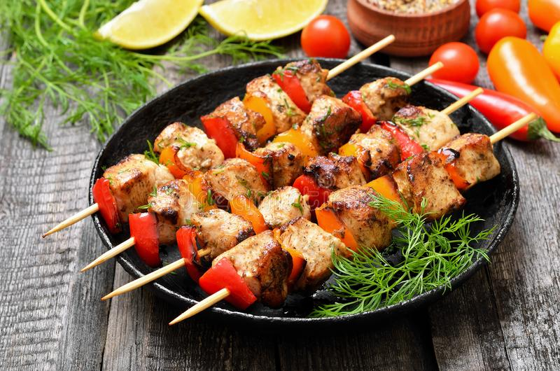

About Delhi: Delhi India’s capital territory is a massive metropolitan area in the country’s north. Delhi is of great historical significance as an important commercial, transport, and cultural hub, as well as the political centre of India.
Delhi is a melting pot of various cultures and races who enrich the variety of the gastronomic range in the city. And this is what makes Delhi famous for food!
Best foods from Delhi
1. Chaat
2. Paranthas
3. Biryani
4. Kebabs

Delhi is not only a good place for holidays, but also for buisness, politics and a lots of meetings.That is why we need a good spot to relax and attend things with a calm mind.